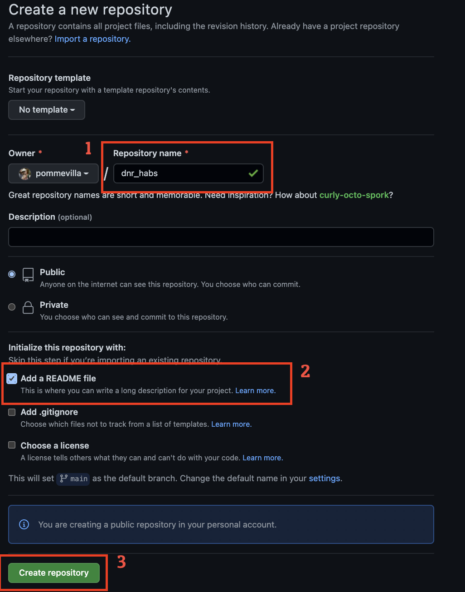
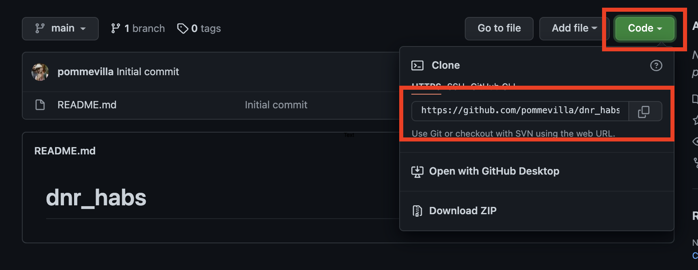
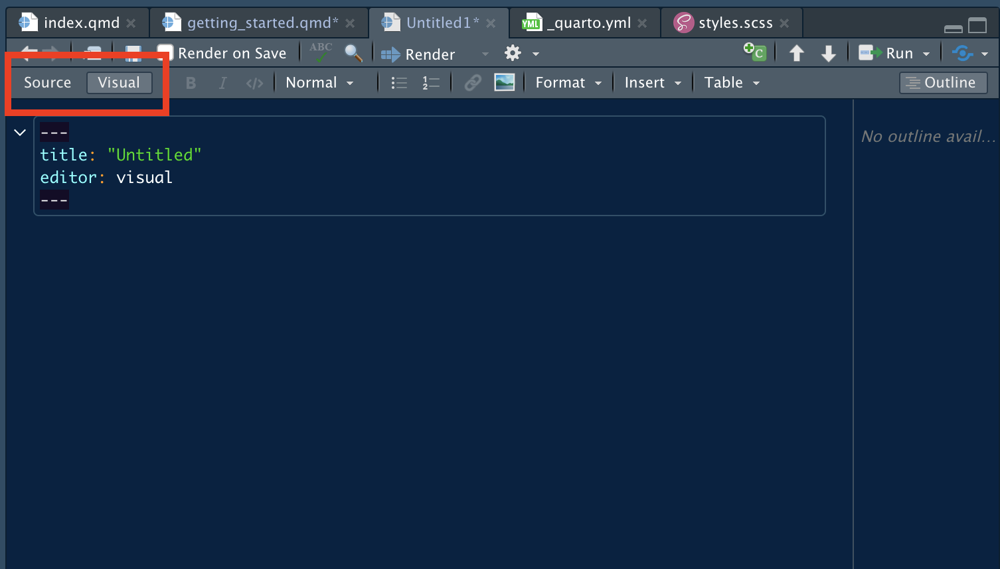
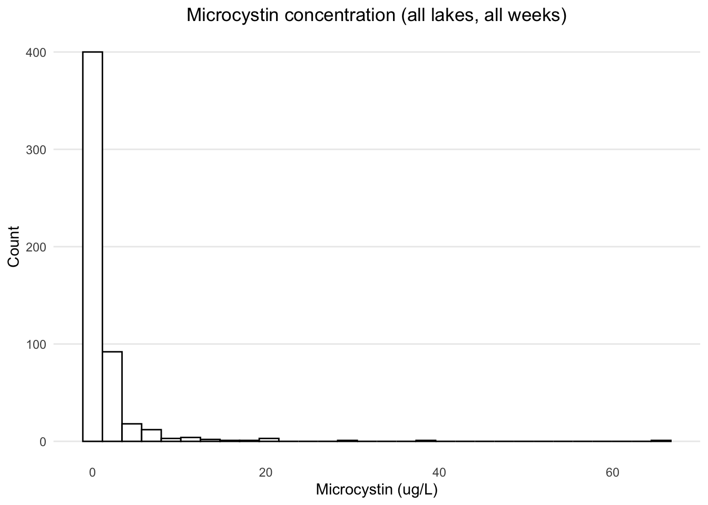
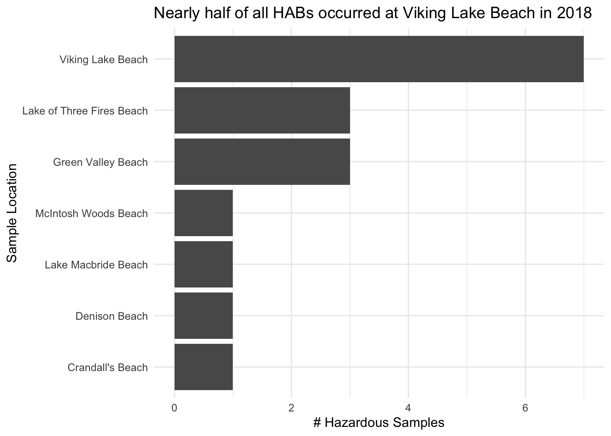

library(tidyverse)
library(readxl)
library(lubridate)
library(janitor)
theme_set(theme_minimal())Getting Started
For the first lesson, we’ll set up the project we’ll work in for the next several meetings. By the end of today, we’ll have:
- Set up a new Github repo
- Downloaded the data
- Explored and cleaned the data a bit
- Made a visualization
Along the way, we’ll be using Quarto documents (successor to RMarkdown documents) so that our work is well-documented and ready to share. Before we get started with all of that, though, let’s familiarize ourselves with the data we’ll be working with.
The Iowa DNR’s Lake Monitoring Dataset
For the past several decades, the Iowa Department of Natural Resources has been monitoring the water quality of multiple beaches throughout Iowa in order to better understand harmful algal blooms. Between Memorial and Labor day, weekly water samples are taken from these beaches and several chemical and biological measurements are taken. In addition to these measurements, we will incorporate land-use classifications and weather data.
The measurement of interest is the microcystin concentration, measured in ug/L. When this measurement is above the EPA-recommend 8 ug/L, the beach is closed as it is considered dangerous to humans at that point. Hence, this is considered a supervised learning problem.
The goal of the project will be to use this data to:
- Attempt to better understand what drives harmful algal blooms
- Create a model that can predict harmful algal blooms
Now that we know a little bit about the data we’ll be working with and the problem we’re being asked to solve, let’s go ahead and set up our project.
Setting up your project directory
We’ll start by creating a new Github repository. Go to github and click the + and create a new repository.
- Name the repository
dnr_habs. - Select the option to create a
README.mdfile - Then click “Create repository”.

You’ll be taken to your new dnr_habs repository. Click on the “Code” button and you’ll see the copy link for the repo with a couple different options. If you’ve set up an SSH key, click SSH; otherwise, HTTPS is fine. Click the copy button to the right of the link:

Now open your command line interface (CLI). On Mac, this can be Terminal or iTerm2; on Windows, this can be Git Bash or PuTTy. Navigate to wherever you want your project to sit and run the following command:
git clone https://github.com/pommevilla/dnr_habs.gitYou’ll now see that dnr_habs is on your computer now.
Keep your project directories in one place!
If you haven’t done so already, I highly recommend keeping all of your project repositories in a central place. For example, on all my machines, I have a repos folder in my home directory. This way, whenever I’m doing stuff on command line, I know that all of my work can be found within ~/repos.
I also keep a directory called scratch here that contains all of the one-off random tasks/scripts I find myself writing. Whenever I need to do a random plot or calculation that doesn’t need it’s own project, I just throw it in scratch instead of cluttering up my Desktop or somewhere else. This way, I always know where to look for these things if I need to reference it later.
Get the data
Create a folder in dnr_habs called data. You can download a zip of the data we’ll use from this link. Save DNR_data.zip to the data folder.
Now that we’ve made a change, let’s go ahead and make our first commit. On the command line:
- Run
git statusto verify that the only thing that’s changed is addingdata/DNR_data.zip - Run
git add data/DNR_data.zipto stage the data - Run
git commit -m 'Initial add of data'to commit the changes - Send the changes to the remote using
git push
Now, if you go back to your remote repository, you should see that the data folder is viewable.
A word about
git status
I didn’t show it up above, but I run git status after nearly every git command I do to make sure that what I expect to happen is actually happening. It might be slightly annoying to do all the time, but the couple of seconds you take running git status will prevent hours of headaches down the road when you know what to look for.
Create a project in RStudio
Open up RStudio and select File > New Project > Existing Directory, then use the Browse button to navigate to dnr_habs. Click Create project and a new RStudio session will begin with the dnr_habs directory open.
On the command line, run git status and you’ll notice that there are two new files added: .gitignore and dnr_habs.Rproj. We’ll talk about these more later, but let’s commit this for now:
git status(Verify thatdnr_habs.Rprojand.gitignoreare untracked files)git add .(Note the dot; we’re adding all of the changes to all of the files in the current working directory)git commit -m 'Create RProject'git push
Why use RProjects?
Rprojects are a nice, simple way to keep all of your files related to a single project cleanly separated from other files on your system. In addition, using an Rproject figures out your working directory for you; no need to setwd to get your scripts to work.
To get back here in the future, you can use File > Open Project..., or just open the dnr_habs.Rproj item.
Creating the document
Okay, let’s actually do some coding. In RStudio, click File > New File > Quarto Document... and just go ahead and click Create. You’ll be taken to a new, empty document. This document is in the Visual editor mode. For now, click the “Source” button in the top left:

Great! Go ahead and save it as dnr_eda.qmd. From here we can start coding. We’ll start by loading the libraries we’re going to use today. First, create a new code chunk. You can select the “+C” button in the top right of the pane, or you can use the key shortcuts:
- On Mac,
Option + Command + I - On Windows,
Control + Alt + I
Within the chunk, load tidyverse, readxl, janitor, and lubridate:
Go ahead and run the chunk.
Now we’re ready to read the dataset.
The Visual Markdown Editor
The Visual Markdown Editor is actually super sick and let’s you do a lot of cool stuff. To learn more about the Visual Editor, check out the documentation.
The only reason I don’t use it is because I use Vim keybindings in my RStudio, and those are not compatible with the Visual Markdown Editor.
Reading in the data
Before we can read in the data, we need to extract it from DNR_data.zip into the data folder. Afterwards, we can read in the data using readxl. We’ll start with the 2018 data. Create a new code chunk, then run:
dnr.2018 <- read_xlsx("data/IowaDNR_2018_Data_Merged.xlsx")
dnr.2018 %>%
head()# A tibble: 6 × 17
Sample_ID `Environmental Locati…` `Collected Date` `Microcystin \…` pH
<chr> <chr> <dttm> <dbl> <dbl>
1 1-21280001 Backbone Beach 2018-05-22 11:19:00 0.63 8.1
2 5-21280001 Backbone Beach 2018-06-19 09:00:00 0.46 8.8
3 14-21280001 Backbone Beach 2018-08-21 13:00:00 0.438 8.9
4 8-21280001 Backbone Beach 2018-07-10 11:15:00 0.425 8.2
5 15-21280001 Backbone Beach 2018-08-28 12:30:00 0.418 8.8
6 13-21280001 Backbone Beach 2018-08-14 10:30:00 0.405 8
# … with 12 more variables: `DOC(ppm)` <dbl>, `TKP (mg P/L)` <dbl>,
# `TKN (mg N/L)` <dbl>, `NH3 (mg N/L)` <chr>, `NOx (mg N/L)` <dbl>,
# `NO2 (mg N/L)` <chr>, `Cl (mg Cl/L)` <chr>, `SO4 mg SO4/L)` <chr>,
# `16S rRNA gene\r\n(copies/mL)` <dbl>,
# `MicrocystismcyA gene\r\n(copies/mL)` <dbl>,
# `AanabaenamcyA gene\r\n(copies/mL)` <dbl>,
# `PlanktothrixmcyA gene\r\n(copies/mL)` <dbl>The column names are a little hard to work with. Let’s use janitor::clean_names to make the column names easier to type:
dnr.2018 <- read_xlsx("data/IowaDNR_2018_Data_Merged.xlsx") %>%
clean_names()
dnr.2018 %>%
head()# A tibble: 6 × 17
sample_id environmental_l… collected_date microcystin_raw… p_h doc_ppm
<chr> <chr> <dttm> <dbl> <dbl> <dbl>
1 1-21280001 Backbone Beach 2018-05-22 11:19:00 0.63 8.1 5.85
2 5-21280001 Backbone Beach 2018-06-19 09:00:00 0.46 8.8 1.45
3 14-212800… Backbone Beach 2018-08-21 13:00:00 0.438 8.9 2.15
4 8-21280001 Backbone Beach 2018-07-10 11:15:00 0.425 8.2 1.91
5 15-212800… Backbone Beach 2018-08-28 12:30:00 0.418 8.8 1.73
6 13-212800… Backbone Beach 2018-08-14 10:30:00 0.405 8 1.50
# … with 11 more variables: tkp_mg_p_l <dbl>, tkn_mg_n_l <dbl>,
# nh3_mg_n_l <chr>, n_ox_mg_n_l <dbl>, no2_mg_n_l <chr>, cl_mg_cl_l <chr>,
# so4_mg_so4_l <chr>, x16s_r_rna_gene_copies_m_l <dbl>,
# microcystismcy_a_gene_copies_m_l <dbl>,
# aanabaenamcy_a_gene_copies_m_l <dbl>,
# planktothrixmcy_a_gene_copies_m_l <dbl>Okay, it’s a bit easier to work with now.
Some EDA
Checking year counts
Let’s start off by counting the samples by year to make sure that the dataset doesn’t have any observations from other years. Since collected_date is a datetime object (as denoted by the dttm beneath the column name), we can use the year function from lubridate to count:
dnr.2018 %>%
count(year(collected_date))# A tibble: 2 × 2
`year(collected_date)` n
<dbl> <int>
1 2018 539
2 NA 1It looks like there’s an observation that doesn’t have the year for some reason. Let’s take a look at it:
dnr.2018 %>%
filter(is.na(collected_date))# A tibble: 1 × 17
sample_id environmental_l… collected_date microcystin_raw_valu… p_h doc_ppm
<chr> <chr> <dttm> <dbl> <dbl> <dbl>
1 4-21070001 George Wyth Bea… NA NA NA NA
# … with 11 more variables: tkp_mg_p_l <dbl>, tkn_mg_n_l <dbl>,
# nh3_mg_n_l <chr>, n_ox_mg_n_l <dbl>, no2_mg_n_l <chr>, cl_mg_cl_l <chr>,
# so4_mg_so4_l <chr>, x16s_r_rna_gene_copies_m_l <dbl>,
# microcystismcy_a_gene_copies_m_l <dbl>,
# aanabaenamcy_a_gene_copies_m_l <dbl>,
# planktothrixmcy_a_gene_copies_m_l <dbl>For some reason, this observation has no data, but has a sample_id and location. Checking the original Excel file confirms that this is the case, and so we can remove this row as an additional step when we read in the file. The updated command to read in the file is:
dnr.2018 <- read_xlsx("data/IowaDNR_2018_Data_Merged.xlsx") %>%
clean_names() %>%
filter(!is.na(collected_date))
dnr.2018 %>%
head()# A tibble: 6 × 17
sample_id environmental_l… collected_date microcystin_raw… p_h doc_ppm
<chr> <chr> <dttm> <dbl> <dbl> <dbl>
1 1-21280001 Backbone Beach 2018-05-22 11:19:00 0.63 8.1 5.85
2 5-21280001 Backbone Beach 2018-06-19 09:00:00 0.46 8.8 1.45
3 14-212800… Backbone Beach 2018-08-21 13:00:00 0.438 8.9 2.15
4 8-21280001 Backbone Beach 2018-07-10 11:15:00 0.425 8.2 1.91
5 15-212800… Backbone Beach 2018-08-28 12:30:00 0.418 8.8 1.73
6 13-212800… Backbone Beach 2018-08-14 10:30:00 0.405 8 1.50
# … with 11 more variables: tkp_mg_p_l <dbl>, tkn_mg_n_l <dbl>,
# nh3_mg_n_l <chr>, n_ox_mg_n_l <dbl>, no2_mg_n_l <chr>, cl_mg_cl_l <chr>,
# so4_mg_so4_l <chr>, x16s_r_rna_gene_copies_m_l <dbl>,
# microcystismcy_a_gene_copies_m_l <dbl>,
# aanabaenamcy_a_gene_copies_m_l <dbl>,
# planktothrixmcy_a_gene_copies_m_l <dbl>Let’s count again to confirm this works:
dnr.2018 %>%
count(year(collected_date))# A tibble: 1 × 2
`year(collected_date)` n
<dbl> <int>
1 2018 539Great! Now all of the remaining data has the correct year.
Exploring microcystin
Since the microcystin concentration is how we’re going to label the samples, we need to check that they’re all there. Similar to the above, we can count the number of missing rows using is.na and count:
dnr.2018 %>%
count(is.na(microcystin_raw_value_ug_l))# A tibble: 1 × 2
`is.na(microcystin_raw_value_ug_l)` n
<lgl> <int>
1 FALSE 539This tells us that there are no missing values in the microcystin column, which is good since we won’t need to throw any data away.
Now let’s see how the microcystin is distributed:
dnr.2018 %>%
ggplot(aes(microcystin_raw_value_ug_l)) +
geom_histogram(color = "black", fill = "white") +
labs(
x = "Microcystin (ug/L)",
y = "Count",
title = "Microcystin concentration (all lakes, all weeks)"
) +
theme(
panel.grid.minor = element_blank(),
panel.grid.major.x = element_blank(),
plot.title = element_text(hjust = 0.5)
)
The data shows a long right tail. This is our first hint that this is a highly imbalanced dataset.
Creating the hazard_class variable
To get a better idea of this, let’s create a new class variable based on the microcystin concentration: if the microcystin is greater than 8 ug/L, we’ll say that it is hazardous, and safe otherwise. For now, let’s just check print out the results and check that it works as we expected it to:
dnr.2018 %>%
mutate(hazard_class = if_else(
microcystin_raw_value_ug_l > 8,
"hazardous",
"safe"
)) %>%
select(microcystin_raw_value_ug_l, hazard_class)# A tibble: 539 × 2
microcystin_raw_value_ug_l hazard_class
<dbl> <chr>
1 0.63 safe
2 0.46 safe
3 0.438 safe
4 0.425 safe
5 0.418 safe
6 0.405 safe
7 0.39 safe
8 0.3 safe
9 0.237 safe
10 0.205 safe
# … with 529 more rowsOkay, this looks correct. Let’s update our code that reads in the data to include this before we forget:
dnr.2018 <- read_xlsx("data/IowaDNR_2018_Data_Merged.xlsx") %>%
clean_names() %>%
filter(!is.na(collected_date)) %>%
mutate(hazard_class = if_else(
microcystin_raw_value_ug_l > 8,
"hazardous",
"safe"
))
dnr.2018 %>%
head()# A tibble: 6 × 18
sample_id environmental_l… collected_date microcystin_raw… p_h doc_ppm
<chr> <chr> <dttm> <dbl> <dbl> <dbl>
1 1-21280001 Backbone Beach 2018-05-22 11:19:00 0.63 8.1 5.85
2 5-21280001 Backbone Beach 2018-06-19 09:00:00 0.46 8.8 1.45
3 14-212800… Backbone Beach 2018-08-21 13:00:00 0.438 8.9 2.15
4 8-21280001 Backbone Beach 2018-07-10 11:15:00 0.425 8.2 1.91
5 15-212800… Backbone Beach 2018-08-28 12:30:00 0.418 8.8 1.73
6 13-212800… Backbone Beach 2018-08-14 10:30:00 0.405 8 1.50
# … with 12 more variables: tkp_mg_p_l <dbl>, tkn_mg_n_l <dbl>,
# nh3_mg_n_l <chr>, n_ox_mg_n_l <dbl>, no2_mg_n_l <chr>, cl_mg_cl_l <chr>,
# so4_mg_so4_l <chr>, x16s_r_rna_gene_copies_m_l <dbl>,
# microcystismcy_a_gene_copies_m_l <dbl>,
# aanabaenamcy_a_gene_copies_m_l <dbl>,
# planktothrixmcy_a_gene_copies_m_l <dbl>, hazard_class <chr>And now, let’s see just how imbalanced these samples are:
dnr.2018 %>%
count(hazard_class) %>%
mutate()# A tibble: 2 × 2
hazard_class n
<chr> <int>
1 hazardous 17
2 safe 522So, of the 539 total samples, only 17 of them are considered hazardous. To put numbers on how imbalanced this is:
dnr.2018 %>%
group_by(hazard_class) %>%
summarise(n = n()) %>%
mutate(prop = n / sum(n))# A tibble: 2 × 3
hazard_class n prop
<chr> <int> <dbl>
1 hazardous 17 0.0315
2 safe 522 0.968 Only 3% of our samples belong to the minority class. This is an extremely imbalanced dataset and we must address this when we do our model training and predictions.
Note that putting the microcystin on a log scale makes the distribution appear normal. This is an example of a log-normal distribution. Here is some further reading:
Plotting counts of hazardous cases by lake
The next thing we might be interested in is where the HABs are occurring. There are several ways to do this, but one way is to begin by filtering out the non-hazardous samples, then counting the locations the hazardous samples occurred at:
dnr.2018 %>%
filter(hazard_class == "hazardous") %>%
count(environmental_location)# A tibble: 7 × 2
environmental_location n
<chr> <int>
1 Crandall's Beach 1
2 Denison Beach 1
3 Green Valley Beach 3
4 Lake Macbride Beach 1
5 Lake of Three Fires Beach 3
6 McIntosh Woods Beach 1
7 Viking Lake Beach 7So this shows us that the harmful algal blooms occurred in only a few places. Let’s make a plot to communicate this:
dnr.2018 %>%
filter(hazard_class == "hazardous") %>%
count(environmental_location) %>%
mutate(environmental_location = fct_reorder(environmental_location, n)) %>%
ggplot(aes(n, environmental_location)) +
geom_col() +
labs(
x = "# Hazardous Samples",
y = "Sample Location",
title = "Nearly half of all HABs occurred at Viking Lake Beach in 2018"
)
Commit your work
Before we wrap up for the day, let’s commit our work. We’re not making any webpages yet, so the only thing that we need to worry about is saving the qmd we’ve been working in. Run git status to take a look at the changes.
Something you’ll note, though, is that we’ve extracted the zip and have put all the IowaDNR_xxxx_Data_Merged.xlsx files in our project repository. This is redundant because we already have the DNR_data.zip file that contains all of these datasets. However, we want to keep these files in our local repository so that we can run our code without pushing it to the remote repository and cluttering things up.
We can achieve this by adding the *.xlsx line to our .gitignore. This tells git to not track changes for any files that end in *.xlsx. Go ahead and add this line to your .gitignore, either by opening it up in RStudio or doing echo "*.xslx" >> .gitignore on the command line. Run git status again and you’ll see that the xlsx files are no longer being tracked. Let’s commit this change:
git add .gitignore(typically, we want our commits to be one thing at a time)git commit -m "Add xlsx files"
Now that that’s done, let’s commit the rest of our files:
git status(dnr_eda.qmdshould show up here)git add .git commit -m 'Begin EDA'git push
Afterwards, if you go to your Github page, you should see dnr_eda.qmd at the project root.
Homework
- Repeat the EDA and visualizations for the 2019 data set.
- Commit and push your changes
- Combine the 2019 and 2020 datasets.
Next time
- Model training and predictions with
tidymodels